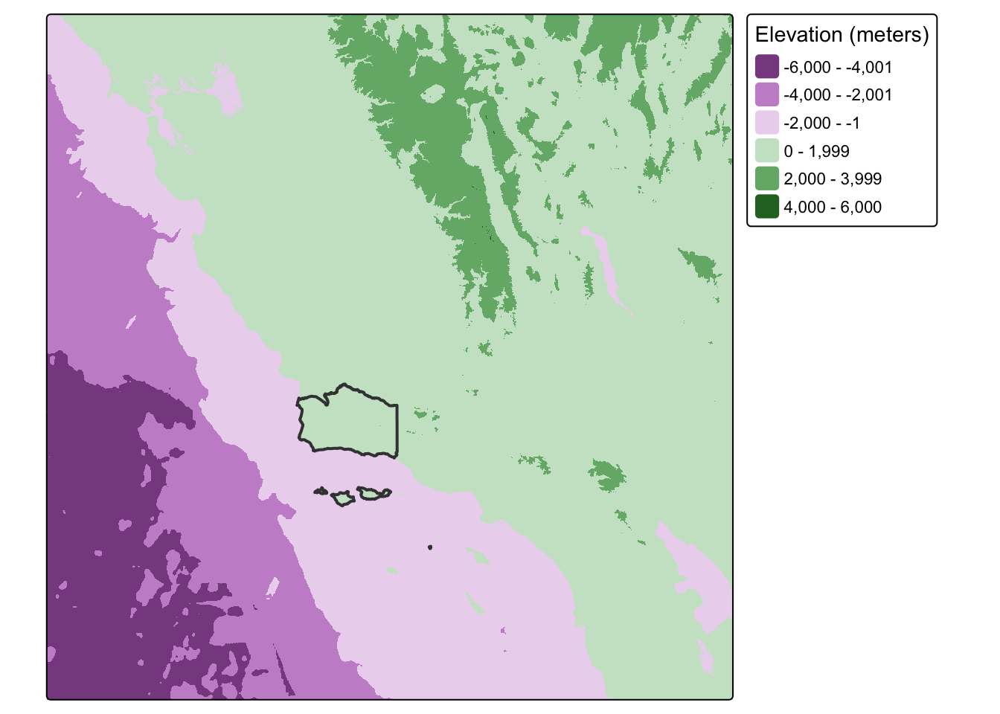
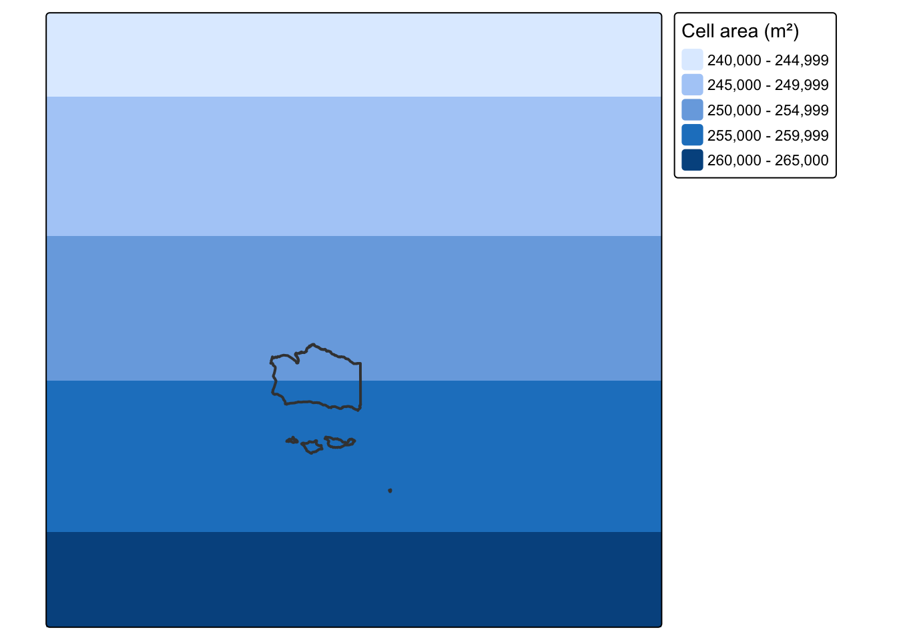
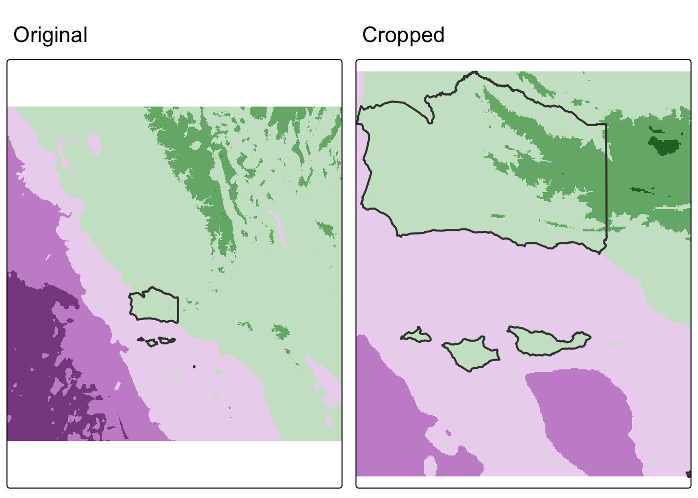
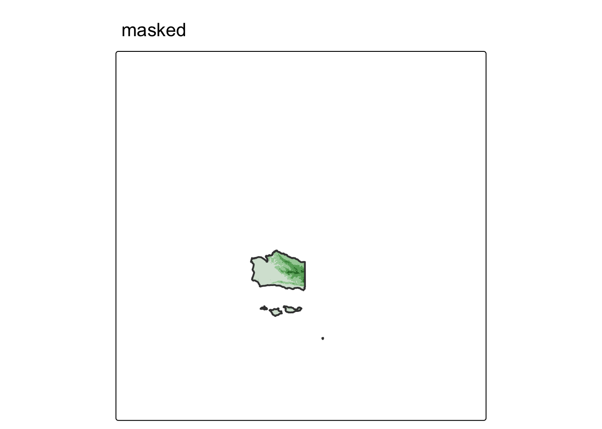
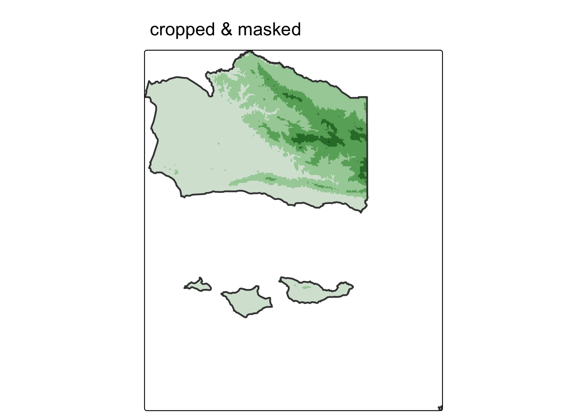
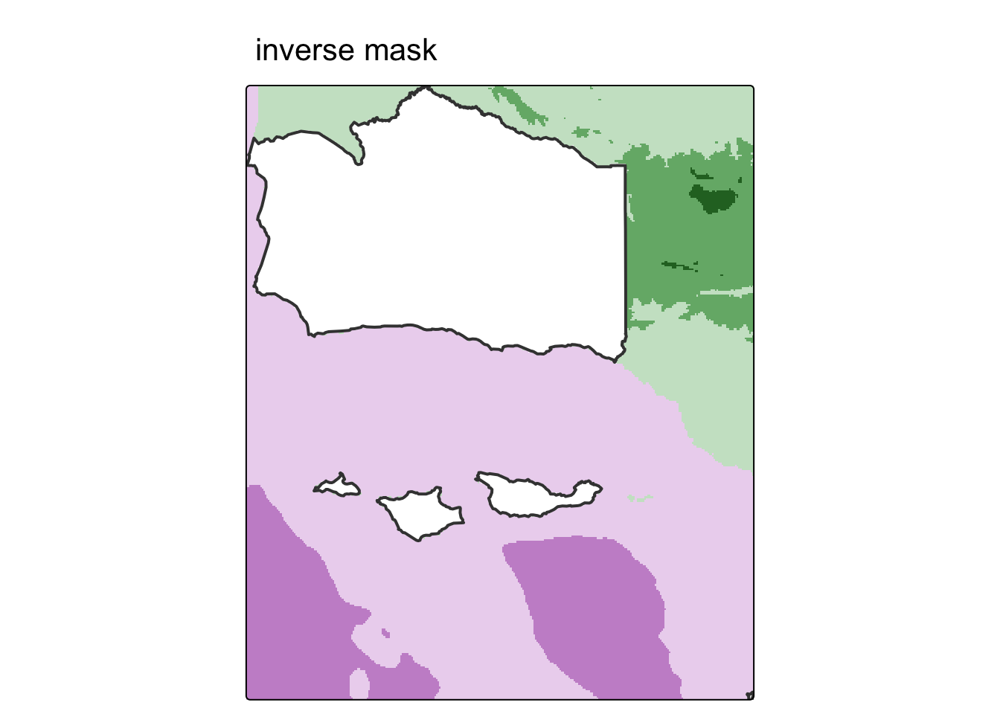
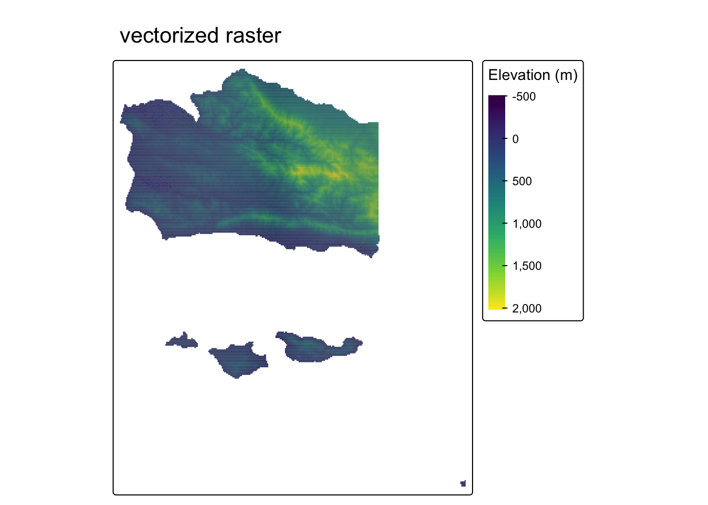
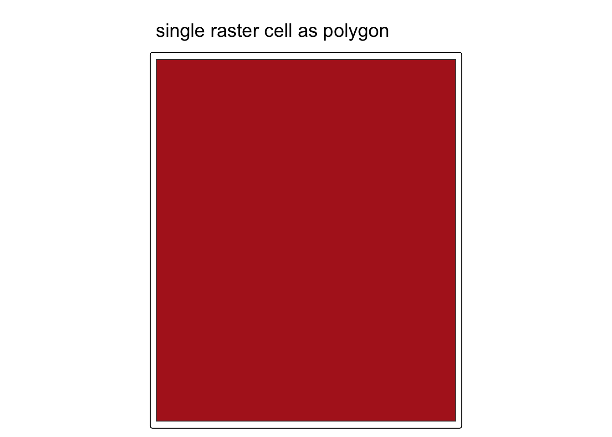
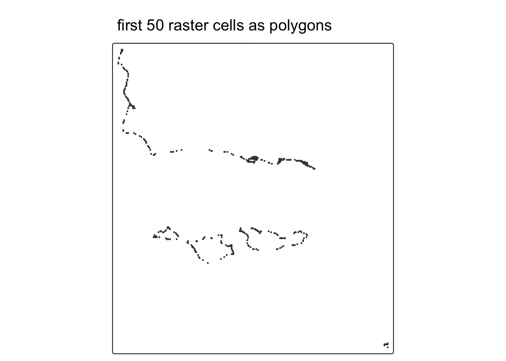
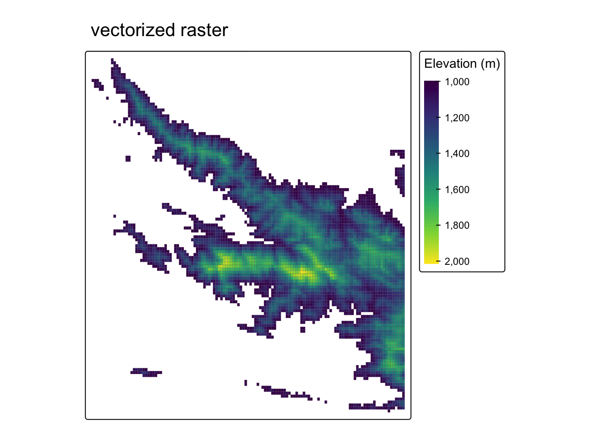

library(sf) # vector handling
library(terra) # raster handling
library(tidyverse)
library(tmap) # map making
library(elevatr) # elevation data download
library(tigris) # US Census boundary data
library(viridisLite)
NoteSource Materials
The following materials are modified from Chapter 6 of Geocomputation with R by Robin Lovelace.
In this lab we’ll explore operations that rely on interactions between vector and raster datasets, including how to convert raster data into vector data. We’ll use real-world elevation data downloaded via the {elevatr} package and county boundaries from the {tigris} package.
Background
Data
Elevation raster — terrain elevation for a Southern California region centered on Santa Barbara County. The values represent meters above (or below) sea level and come from the AWS Terrain Tiles dataset, a global, cloud-hosted mosaic of digital elevation models (DEMs) derived from sources such as the USGS 3DEP, SRTM, and GMTED2010.
County boundary — the administrative boundary of Santa Barbara County, sourced from the US Census Bureau TIGER/Line shapefiles. TIGER/Line (Topologically Integrated Geographic Encoding and Referencing) is the Census Bureau’s authoritative geographic database, covering legal and statistical boundaries for the entire US — states, counties, census tracts, zip code tabulation areas, roads, water features, and more. These boundaries represent legal/administrative limits as of the specified year (2021 in this lab).
The {tigris} R package provides a direct interface to the TIGER/Line database, letting you download any of these geographies as sf objects with a single function call.
Accessing the data
elevatr::get_elev_raster() downloads elevation data from AWS Terrain Tiles for a given spatial extent.
tigris::counties() downloads US Census Bureau county boundaries as an sf object.
1. Set up
First, we’ll load all relevant packages.
We’ll download the following real-world datasets:
- Elevation: terrain elevation downloaded from AWS terrain tiles via
{elevatr} - Boundary: Santa Barbara County boundary from the US Census Bureau via
{tigris}
# load Santa Barbara County boundary from US Census Bureau
boundary <- counties(state = "CA", cb = TRUE, year = 2021) %>% # cb = cartographic boundary, simplified for faster download time
filter(NAME == "Santa Barbara") %>%
st_transform(4326)
# expand the boundary bbox to cover a broader Southern California region
expanded_bbox <- st_bbox(boundary)
expanded_bbox["xmin"] <- expanded_bbox["xmin"] - 2
expanded_bbox["xmax"] <- expanded_bbox["xmax"] + 2
expanded_bbox["ymin"] <- expanded_bbox["ymin"] - 1.5
expanded_bbox["ymax"] <- expanded_bbox["ymax"] + 1.5
# convert expanded banding box to sf
socal_region <- st_as_sfc(expanded_bbox) %>% st_sf()
# download elevation for the broader region at zoom level 7 (~1.2km resolution)
elevation_raw <- get_elev_raster(locations = socal_region, z = 7)
# convert from {raster} RasterLayer to {terra} SpatRaster
elevation <- rast(elevation_raw)
# rename layer from temp file path to something meaningful
names(elevation) <- "elevation"
WarningRemember to check the CRS!
Whenever we work with multiple spatial datasets, we need to check that the coordinate reference systems match. If they don’t, we need to transform one to match the other.
# check if coordinate reference systems match
if(crs(elevation) == crs(boundary)) {
print("Coordinate reference systems match")
} else{
warning("Updating coordinate reference systems to match")
# transform data to match
boundary <- st_transform(boundary, st_crs(elevation))
}Warning: Updating coordinate reference systems to matchCode
tm_shape(elevation) +
tm_raster(col.legend = tm_legend(title = "Elevation (meters)")) +
tm_shape(boundary) +
tm_borders(lwd = 2)
2. Checking raster resolution with cellsize()
Before performing any spatial operations on our raster, it’s useful to understand its spatial resolution. Two functions help us do this:
terra::res()returns the x and y spacing between grid lines in the units of the CRSterra::cellsize()returns a SpatRaster where each cell’s value is its actual area, accounting for distortion across latitudes in geographic CRS
# resolution in CRS units (degrees for WGS84)
res(elevation)[1] 0.005009092 0.005009092# actual cell area (in square meters by default)
# returns a SpatRaster because cell area varies by latitude in geographic CRS
cell_sizes <- cellSize(elevation)
cell_sizesclass : SpatRaster
size : 1372, 1684, 1 (nrow, ncol, nlyr)
resolution : 0.005009092, 0.005009092 (x, y)
extent : -123.75, -115.3147, 31.95012, 38.82259 (xmin, xmax, ymin, ymax)
coord. ref. : +proj=longlat +datum=WGS84 +no_defs
source(s) : memory
varname : file7296d0d5730
name : area
min value : 241899.4
max value : 263037.7 # summarize cell size variation across the extent
global(cell_sizes, fun = c("mean", "min", "max")) mean min max
area 252773.7 241899.4 263037.7We can visualize how cell size varies across our extent:
Code
tm_shape(cell_sizes) +
tm_raster(col.legend = tm_legend(title = "Cell area (m²)")) +
tm_shape(boundary) +
tm_borders(lwd = 2)
3. Raster cropping
Many geographic data projects involve integrating data from many different sources, such as remote sensing images (rasters) and administrative boundaries (vectors). Often the extent of input raster datasets is larger than the area of interest. In this case, raster cropping and masking are useful for unifying the spatial extent of input data. Both operations reduce object memory use and associated computational resources for subsequent analysis steps, and may be a necessary preprocessing step when creating attractive maps involving raster data.
First, let’s crop the extent of the elevation raster to match the extent of Santa Barbara County’s boundaries. Through this process, we eliminate grid cells that fall outside the extent of the county and reduce the size of the raster. To do so, we use the terra::crop() function.
# crop raster to extent of vector object
elevation_cropped <- crop(elevation, boundary)Let’s see what our cropped raster looks like compared to our original:
map1 <- tm_shape(elevation) +
tm_raster(col.legend = tm_legend_hide()) +
tm_shape(boundary) +
tm_borders(lwd = 2)+
tm_title(text = "Original")
map2 <- tm_shape(elevation_cropped) +
tm_raster(col.legend = tm_legend_hide()) +
tm_shape(boundary) +
tm_borders(lwd = 2) +
tm_title(text = "Cropped")
tmap_arrange(map1, map2)
We cropped to the extent of the Santa Barbara County raster, but notice how there are still raster cells outside our boundary. We can set these values to NA using terra::mask().
# mask raster based on vector object
# (cells outside of vector are converted to NA)
elevation_masked <- mask(elevation, boundary)map3 <- tm_shape(elevation_masked) +
tm_raster(col.legend = tm_legend_hide()) +
tm_shape(boundary) +
tm_borders(lwd = 2) +
tm_title(text = "masked")
map3
Often, we will want to combine both cropping and masking to reduce the size of the raster as much as possible.
# crop and mask raster
elevation_final <- mask(elevation_cropped, boundary)map4 <- tm_shape(elevation_final) +
tm_raster(col.legend = tm_legend_hide()) +
tm_shape(boundary) +
tm_borders(lwd = 2) +
tm_title(text = "cropped & masked")
map4
In some cases, we may want to mask the raster cells inside of the boundaries (i.e. assign cells inside the county to NA). We can do so with terra::mask() by setting the argument inverse = TRUE.
# mask raster based on vector object
# (cells inside of vector are converted to NA)
elevation_inv_masked <- mask(elevation_cropped, boundary, inverse = TRUE)map5 <- tm_shape(elevation_inv_masked) +
tm_raster(col.legend = tm_legend_hide()) +
tm_shape(boundary) +
tm_borders(lwd = 2) +
tm_title(text = "inverse mask")
map5
4. Raster vectorization
There are several ways to convert raster data into vector. The most common, and straightforward, is converting raster grid cells into polygons. For more examples, check out Geocomputation with R.
We could simply convert all grid cells into polygons like so:
elevation_raster_poly <- as.polygons(elevation_final) %>%
st_as_sf() %>%
rename(elevation = 1)
head(elevation_raster_poly)Simple feature collection with 6 features and 1 field
Geometry type: POLYGON
Dimension: XY
Bounding box: xmin: -119.8179 ymin: 34.01887 xmax: -119.6526 ymax: 34.05894
Geodetic CRS: GEOGCRS["unknown",
DATUM["World Geodetic System 1984",
ELLIPSOID["WGS 84",6378137,298.257223563,
LENGTHUNIT["metre",1]],
ID["EPSG",6326]],
PRIMEM["Greenwich",0,
ANGLEUNIT["degree",0.0174532925199433],
ID["EPSG",8901]],
CS[ellipsoidal,2],
AXIS["longitude",east,
ORDER[1],
ANGLEUNIT["degree",0.0174532925199433,
ID["EPSG",9122]]],
AXIS["latitude",north,
ORDER[2],
ANGLEUNIT["degree",0.0174532925199433,
ID["EPSG",9122]]]]
elevation geometry
1 -523 POLYGON ((-119.8129 34.0539...
2 -300 POLYGON ((-119.8078 34.0539...
3 -57 POLYGON ((-119.6726 34.0238...
4 -56 POLYGON ((-119.8179 34.0589...
5 -51 POLYGON ((-119.6576 34.0238...
6 -48 POLYGON ((-119.6626 34.0238...Notice that the elevation values are no longer stored as pixel intensities in a grid. They are now an attribute column in a data frame, just like any other vector dataset. Each row is one former raster cell as a polygon.
tm_shape(elevation_raster_poly) +
tm_fill(fill = "elevation",
fill.scale = tm_scale_continuous(values = "viridis"),
fill.legend = tm_legend(title = "Elevation (m)")) +
tm_borders(lwd = 0.1) +
tm_title(text = "vectorized raster")
How does this break down under the hood? Each raster cell becomes its own square polygon. Here’s what a single cell looks like:
# each row in the sf object is one square polygon — one former raster cell
elevation_raster_poly$geometry[1]Geometry set for 1 feature
Geometry type: POLYGON
Dimension: XY
Bounding box: xmin: -119.8129 ymin: 34.04893 xmax: -119.8078 ymax: 34.05394
Geodetic CRS: GEOGCRS["unknown",
DATUM["World Geodetic System 1984",
ELLIPSOID["WGS 84",6378137,298.257223563,
LENGTHUNIT["metre",1]],
ID["EPSG",6326]],
PRIMEM["Greenwich",0,
ANGLEUNIT["degree",0.0174532925199433],
ID["EPSG",8901]],
CS[ellipsoidal,2],
AXIS["longitude",east,
ORDER[1],
ANGLEUNIT["degree",0.0174532925199433,
ID["EPSG",9122]]],
AXIS["latitude",north,
ORDER[2],
ANGLEUNIT["degree",0.0174532925199433,
ID["EPSG",9122]]]]POLYGON ((-119.8129 34.05394, -119.8129 34.0489...tm_shape(elevation_raster_poly[1, ]) +
tm_polygons(fill = "firebrick") +
tm_title(text = "single raster cell as polygon")
Zoom out to the first 50 cells and the grid structure becomes clear. Each polygon is a rectangle aligned to the original raster grid:
tm_shape(elevation_raster_poly[1:50, ]) +
tm_polygons(fill = "firebrick") +
tm_title(text = "first 50 raster cells as polygons")
But, it may be more helpful to create polygons based on some condition.
In this example, we’ll select grid cells above 1000 meters — the approximate base of the Santa Ynez Mountains — by masking the elevation raster. We’ll then convert these grid cells into polygons using the terra::as.polygons() function and turn this into an sf object.
elevation_mask <- elevation_final
# set all elevation values below 1000 meters to NA
elevation_mask[elevation_mask < 1000] <- NA
# convert high-elevation (above 1000m) pixels into polygon shapes
elevation_mask_poly <- as.polygons(elevation_mask) %>%
st_as_sf() %>%
rename(elevation = 1)
# elevation values are preserved as an attribute column
head(elevation_mask_poly)Simple feature collection with 6 features and 1 field
Geometry type: MULTIPOLYGON
Dimension: XY
Bounding box: xmin: -120.0583 ymin: 34.46969 xmax: -119.4422 ymax: 35.04574
Geodetic CRS: GEOGCRS["unknown",
DATUM["World Geodetic System 1984",
ELLIPSOID["WGS 84",6378137,298.257223563,
LENGTHUNIT["metre",1]],
ID["EPSG",6326]],
PRIMEM["Greenwich",0,
ANGLEUNIT["degree",0.0174532925199433],
ID["EPSG",8901]],
CS[ellipsoidal,2],
AXIS["longitude",east,
ORDER[1],
ANGLEUNIT["degree",0.0174532925199433,
ID["EPSG",9122]]],
AXIS["latitude",north,
ORDER[2],
ANGLEUNIT["degree",0.0174532925199433,
ID["EPSG",9122]]]]
elevation geometry
1 1000 MULTIPOLYGON (((-119.9731 3...
2 1001 MULTIPOLYGON (((-120.0433 3...
3 1002 MULTIPOLYGON (((-119.9832 3...
4 1003 MULTIPOLYGON (((-120.0232 3...
5 1004 MULTIPOLYGON (((-120.0483 3...
6 1005 MULTIPOLYGON (((-119.8579 3...Code
tm_shape(elevation_mask_poly) +
tm_fill(fill = "elevation",
fill.scale = tm_scale_continuous(values = "viridis"),
fill.legend = tm_legend(title = "Elevation (m)")) +
tm_borders(lwd = 0.1) +
tm_title(text = "vectorized raster")